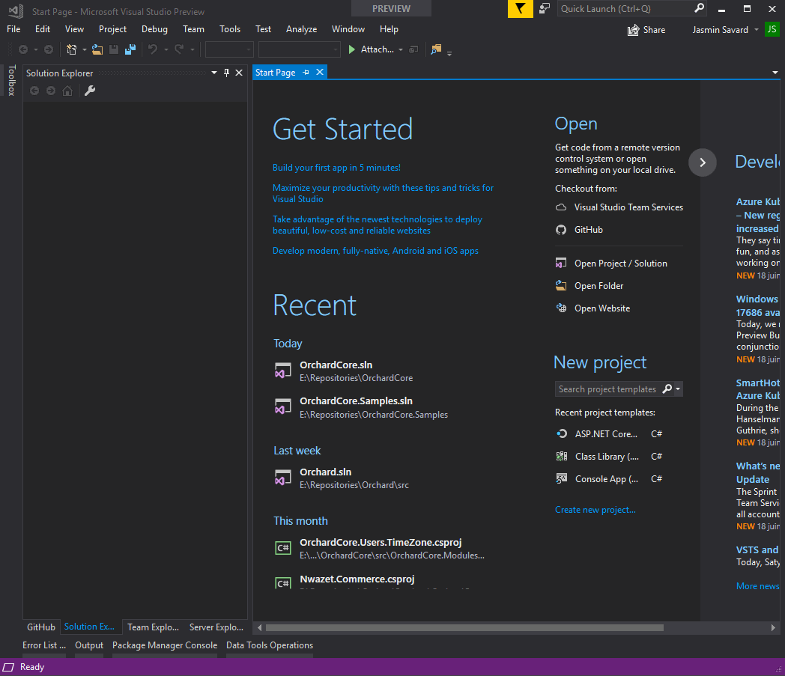
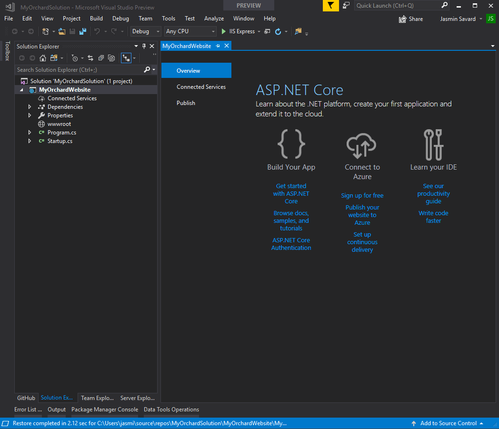
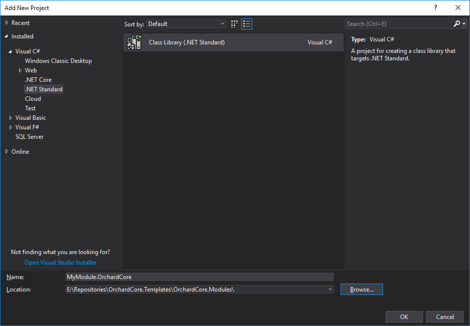
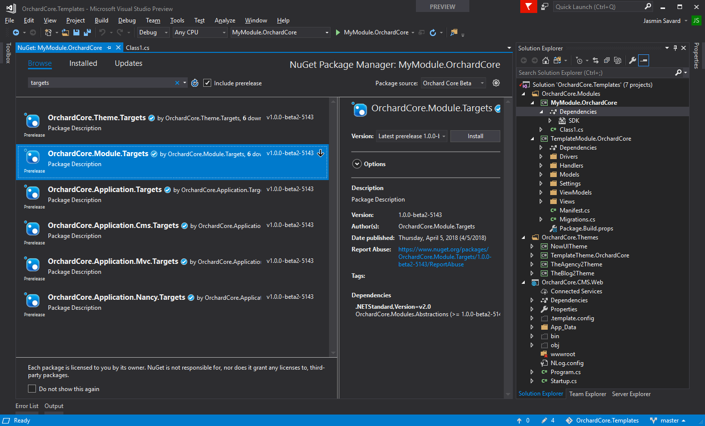
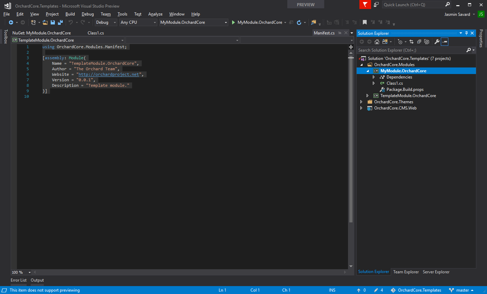
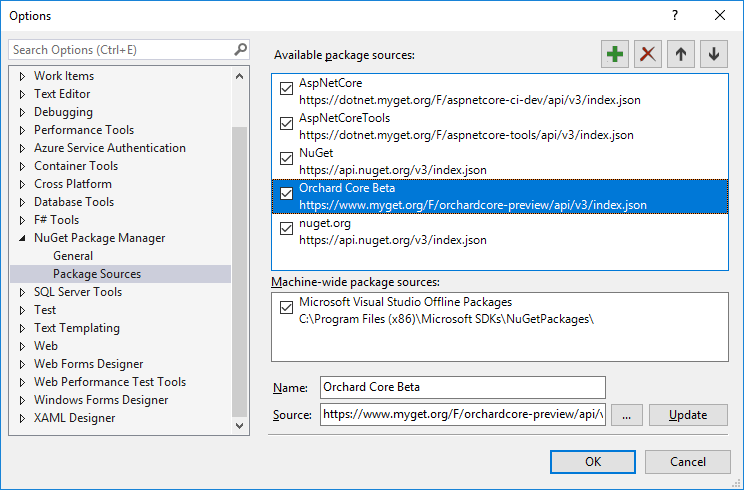

Code Generation Templates
代码生成模板
Orchard Core Templates uses dotnet new templates configurations for creating new websites, themes and modules from the command shell.
Orchard Core Templates使用dotnet new模板配置从命令shell创建新的网站，主题和模块。
More information about dotnet new can be found at https://docs.microsoft.com/en-us/dotnet/core/tools/dotnet-new
有关dotnet new的更多信息，请访问https://docs.microsoft.com/en-us/dotnet/core/tools/dotnet-new
Installing the Orchard Cms templates
安装Orchard Cms模板
Once the .NET Core SDK has been installed, type the following command to install the templates for creating Orchard Core Cms web applications.
安装.NET Core SDK后，键入以下命令以安装用于创建Orchard Core Cms Web应用程序的模板。
dotnet new -i OrchardCore.Cms.Templates::1.0.0-beta2-*
<font color=#0099ff size=4 face="黑体">dotnet new -i OrchardCore.Cms.Templates :: 1.0.0-beta2- *</font>
This will use the most stable release of Orchard Core. In order to use the latest dev branch of Orchard Core, the following command can be used:
这将使用最稳定的Orchard Core版本。要使用Orchard Core的最新__dev__分支，可以使用以下命令：
dotnet new -i OrchardCore.Cms.Templates::1.0.0-beta2-* --nuget-source https://www.myget.org/F/orchardcore-preview/api/v3/index.json
<font color=#0099ff size=4 face="黑体">dotnet new -i OrchardCore.Cms.Templates :: 1.0.0-beta2- * --nuget-source https://www.myget.org/F/orchardcore-preview/api/v3/index.json</font>
Create a new website
创建一个新网站
From Command Shell (automated way)
从命令外壳（自动方式）
Generate an Orchard Cms Web Application
生成Orchard Cms Web应用程序
dotnet new occms
<font color=#0099ff size=4 face="黑体">dotnet new occms</font>
The above command will use the default options.
以上命令将使用默认选项。
You can pass the following CLI parameters to setup options
您可以将以下CLI参数传递给设置选项
Orchard Core Cms Web App (C#)
<font color=#0099ff size=4 face="黑体">Orchard Core Cms Web App（C＃）</font>
Author: Orchard Project
<font color=#0099ff size=4 face="黑体">作者：Orchard Project</font>
Options:
<font color=#0099ff size=4 face="黑体">选项：</font>
-lo|--logger Configures the logger component.
- <font color=#0099ff size=4 face="黑体">lo | --logger配置记录器组件。</font>
nlog - Configures NLog as the logger component.
serilog - Configures Serilog as the logger component.
none - Do not configure logger.
Default: nlog
<font color=#0099ff size=4 face="黑体"></font>
-ov|--orchard-version Specifies which version of Orchard Core packages to use.
- <font color=#0099ff size=4 face="黑体">ov | --orchard-version指定要使用的Orchard Core软件包的版本。</font>
string - Optional
Default: 1.0.0-beta3
Logging can be ignored with this command:
使用此命令可以忽略日志记录：
dotnet new occms --logger none
<font color=#0099ff size=4 face="黑体">dotnet new occms --logger none</font>
From Visual Studio (manual way)
从Visual Studio（手动方式）
Fire up Visual Studio, create a new solution file (.sln) by creating a new ASP.NET Core Web Application :
启动Visual Studio，通过创建新的ASP.NET Core Web应用程序创建新的解决方案文件（.sln）：

Now that we created a new Web Application we need to add proper dependencies so that this new Web Application be targetted as an Orchard Core application.
现在我们创建了一个新的Web应用程序，我们需要添加适当的依赖项，以便将这个新的Web应用程序作为Orchard Core应用程序进行定位。
See Adding Orchard Core Nuget Feed
请参阅[添加果园核心Nuget Feed]（＃adding-orchard-core-nuget-feed）

Finally we will need to register Orchard CMS service in our Startup.cs file like this :
最后，我们需要在Startup.cs文件中注册Orchard CMS服务，如下所示：
using Microsoft.AspNetCore.Builder;
<font color=#0099ff size=4 face="黑体">使用Microsoft.AspNetCore.Builder;</font>
using Microsoft.AspNetCore.Hosting;
<font color=#0099ff size=4 face="黑体">使用Microsoft.AspNetCore.Hosting;</font>
using Microsoft.AspNetCore.Http;
<font color=#0099ff size=4 face="黑体">使用Microsoft.AspNetCore.Http;</font>
using Microsoft.Extensions.DependencyInjection;
<font color=#0099ff size=4 face="黑体">使用Microsoft.Extensions.DependencyInjection;</font>
<font color=#0099ff size=4 face="黑体"></font>
namespace MyNewWebsite
<font color=#0099ff size=4 face="黑体">命名空间MyNewWebsite</font>
{
<font color=#0099ff size=4 face="黑体">{</font>
public class Startup
{
// This method gets called by the runtime. Use this method to add services to the container.
// For more information on how to configure your application, visit https://go.microsoft.com/fwlink/?LinkID=398940
public void ConfigureServices(IServiceCollection services)
{
services.AddOrchardCms();
}
<font color=#0099ff size=4 face="黑体"></font>
// This method gets called by the runtime. Use this method to configure the HTTP request pipeline.
public void Configure(IApplicationBuilder app, IHostingEnvironment env)
{
if (env.IsDevelopment())
{
app.UseDeveloperExceptionPage();
}
<font color=#0099ff size=4 face="黑体"></font>
app.UseOrchardCore();
}
}
}
<font color=#0099ff size=4 face="黑体">}</font>
Create a new module
创建一个新模块
New module from Command Shell (automated way)
Command Shell的新模块（自动方式）
Module commands
模块命令
dotnet new ocmodule -n ModuleName.OrchardCore
<font color=#0099ff size=4 face="黑体">dotnet new ocmodule -n ModuleName.OrchardCore</font>
<font color=#0099ff size=4 face="黑体"></font>
dotnet new ocmodule -n ModuleName.OrchardCore --PartName TestPart
<font color=#0099ff size=4 face="黑体">dotnet new ocmodule -n ModuleName.OrchardCore --PartName TestPart</font>
<font color=#0099ff size=4 face="黑体"></font>
dotnet new ocmodule -n ModuleName.OrchardCore --PartName TestPart --AddPart true
<font color=#0099ff size=4 face="黑体">dotnet new ocmodule -n ModuleName.OrchardCore --PartName TestPart --AddPart true</font>
New module from Visual Studio (manual way)
Visual Studio的新模块（手动方式）
Fire up Visual Studio, open Orchard Core solution file (.sln), select OrchardCore.Modules folder, right click and select "add --> new project" and create a new .NET Standard Class Library:
启动Visual Studio，打开Orchard Core解决方案文件（.sln），选择OrchardCore.Modules文件夹，右键单击并选择“添加 - >新项目”并创建一个新的.NET标准类库：

For marking this new Class Library as an Orchard Module we will now need to reference OrchardCore.Module.Targets Nuget package.
为了将这个新类库标记为Orchard模块，我们现在需要引用OrchardCore.Module.Targets Nuget包。
See adding Orchard Core Nuget Feed
[请参阅添加Orchard Core Nuget Feed]（＃adding-orchard-core-nuget-feed）
Each of these "*.Targets" Nuget packages are used to mark a Class Library as a specific Orchard Core functionality. OrchardCore.Module.Targets is the one we are interested in for now. We will mark our new Class Library as a module by adding OrchardCore.Module.Targets as a dependency. For doing so you will need to right click on MyModule.OrchardCore project and select "Manage Nuget Packages" option. To find the packages in Nuget Package Manager you will need to check "include prerelease" and make sure you have Orchard Core feed that we added earlier selected. Once you have found it click on the Install button on the right panel next to Version : Latest prerelease x.x.x.x
这些“* .Targets”Nuget包中的每一个都用于将类库标记为特定的Orchard Core功能。 OrchardCore.Module.Targets是我们现在感兴趣的。我们将新的类库标记为模块，方法是将OrchardCore.Module.Targets添加为依赖项。为此，您需要右键单击MyModule.OrchardCore项目并选择“Manage Nuget Packages”选项。要在Nuget Package Manager中查找软件包，您需要选中“include prerelease”并确保您已选择我们之前添加的Orchard Core Feed。找到它后，单击Version：Latest prerelease x.x.x.x旁边右侧面板上的Install按钮

Once done your new module will look like this :
完成后，您的新模块将如下所示：

For Orchard Core to identify this module it will now require a Manifest.cs file. Here is an example of that file:
要让Orchard Core识别此模块，它现在需要一个Manifest.cs文件。以下是该文件的示例：
using OrchardCore.Modules.Manifest;
<font color=#0099ff size=4 face="黑体">使用OrchardCore.Modules.Manifest;</font>
<font color=#0099ff size=4 face="黑体"></font>
[assembly: Module(
<font color=#0099ff size=4 face="黑体">[组装：模块（</font>
Name = "TemplateModule.OrchardCore",
Author = "The Orchard Team",
Website = "http://orchardproject.net",
Version = "0.0.1",
Description = "Template module."
)]
<font color=#0099ff size=4 face="黑体">）]</font>
<font color=#0099ff size=4 face="黑体"></font>
For this module to start we now will need to add a Startup.cs file to our new module. See this file as an example:
为了启动这个模块，我们现在需要在我们的新模块中添加一个Startup.cs文件。以此文件为例：
OrchardCore.Templates.Module/Startup.cs
[OrchardCore.Templates.Module / Startup.cs]（https://github.com/OrchardCMS/OrchardCore/tree/dev/src/Templates/OrchardCore.Cms.Templates/content/OrchardCore.Templates.Module/Startup.cs）
Last step is to add our new module to the OrchardCore.Cms.Web project as a reference for including it as part as our website modules. After that, you should be all set for starting building your custom module. You can refer to our template module for examples of what's basically needed normally.
最后一步是将我们的新模块添加到OrchardCore.Cms.Web项目中作为参考，将其作为我们网站模块的一部分包含在内。之后，您应该已准备好开始构建自定义模块。您可以参考我们的[模板模块]（https://github.com/OrchardCMS/OrchardCore/tree/dev/src/Templates/OrchardCore.Cms.Templates/content/OrchardCore.Templates.Module/）获取基本示例通常需要。
Create a new theme
创建一个新主题
New theme From Command Shell (automated way)
来自Command Shell的新主题（自动方式）
Theme commands
主题命令
dotnet new octheme -n "ThemeName.OrchardCore"
New theme from Visual Studio (manual way)
Visual Studio的新主题（手动方式）
Should be the same procedure as with modules but instead we need to reference OrchardCore.Theme.Targets and Manifest.cs file slightly differ:
应该是与模块相同的过程，但我们需要引用OrchardCore.Theme.Targets和Manifest.cs文件略有不同：
using OrchardCore.DisplayManagement.Manifest;
<font color=#0099ff size=4 face="黑体">使用OrchardCore.DisplayManagement.Manifest;</font>
<font color=#0099ff size=4 face="黑体"></font>
[assembly: Theme(
<font color=#0099ff size=4 face="黑体">[集会：主题（</font>
Name = "TemplateTheme.OrchardCore",
Author = "The Orchard Team",
Website = "https://orchardproject.net",
Version = "0.0.1",
Description = "The TemplateTheme."
)]
<font color=#0099ff size=4 face="黑体">）]</font>
Adding Orchard Core Nuget Feed
添加果园核心Nuget Feed
In order to be able to use the dev feed from Visual Studio, open the Tools menu under Nuget Package Manager --> Package Manager Settings.
为了能够使用Visual Studio中的__dev__提要，请打开Nuget包管理器 - >包管理器设置下的“工具”菜单。
The feed url is https://www.myget.org/F/orchardcore-preview/api/v3/index.json
Feed网址为https://www.myget.org/F/orchardcore-preview/api/v3/index.json
